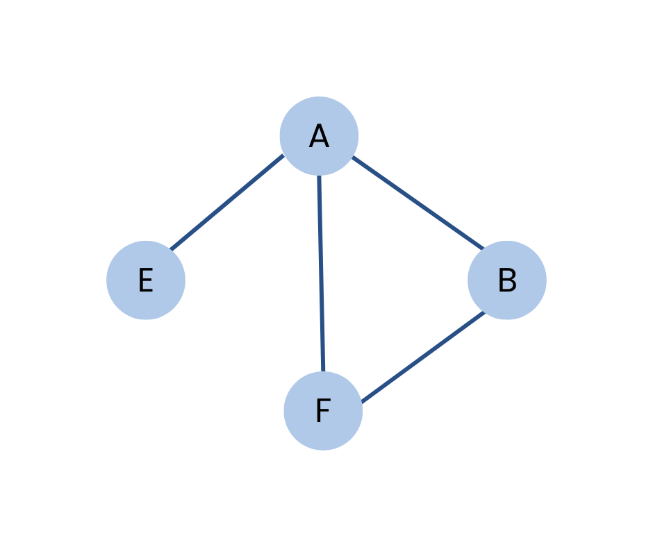

Cyclic Graph
A graph containing at least one cycle is known as a Cyclic graph.

There are four vertices labeled
𝐴,𝐵,𝐸 and 𝐹.This graph contains a cycle. The cycle here is
𝐴 → 𝐵 → 𝐹 → 𝐸 → 𝐴,forming a closed loop.
Applications
- Supply Chain Loops: Used to represent cyclic dependencies, such as feedback loops in inventory and demand.
- Control Systems: Models feedback loops where outputs influence inputs in systems like robotics or automatic controls.